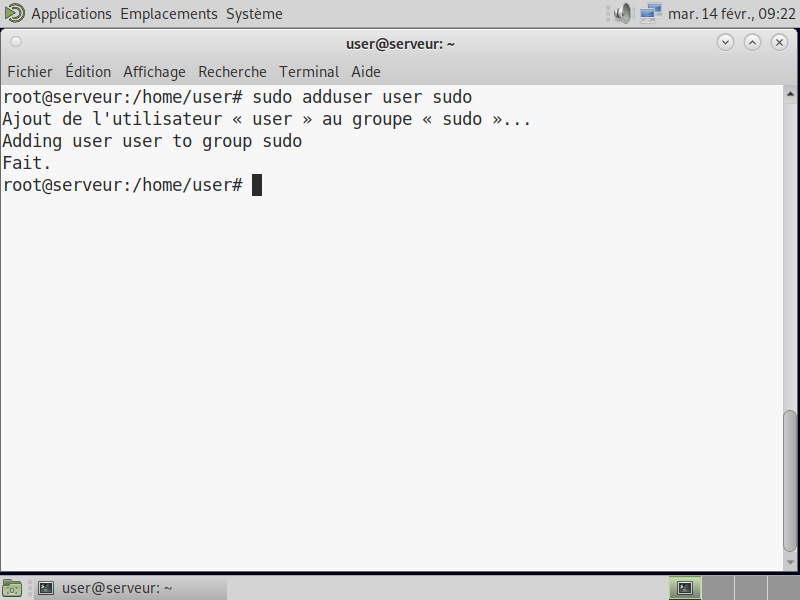
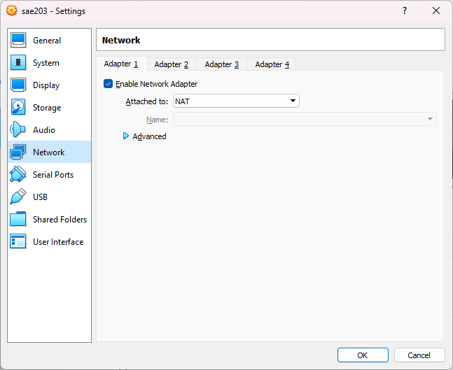
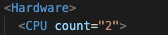
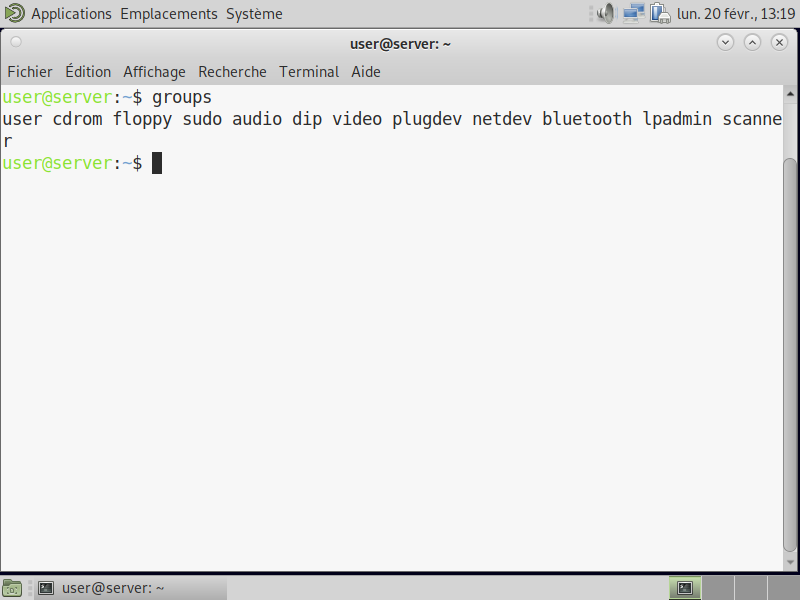
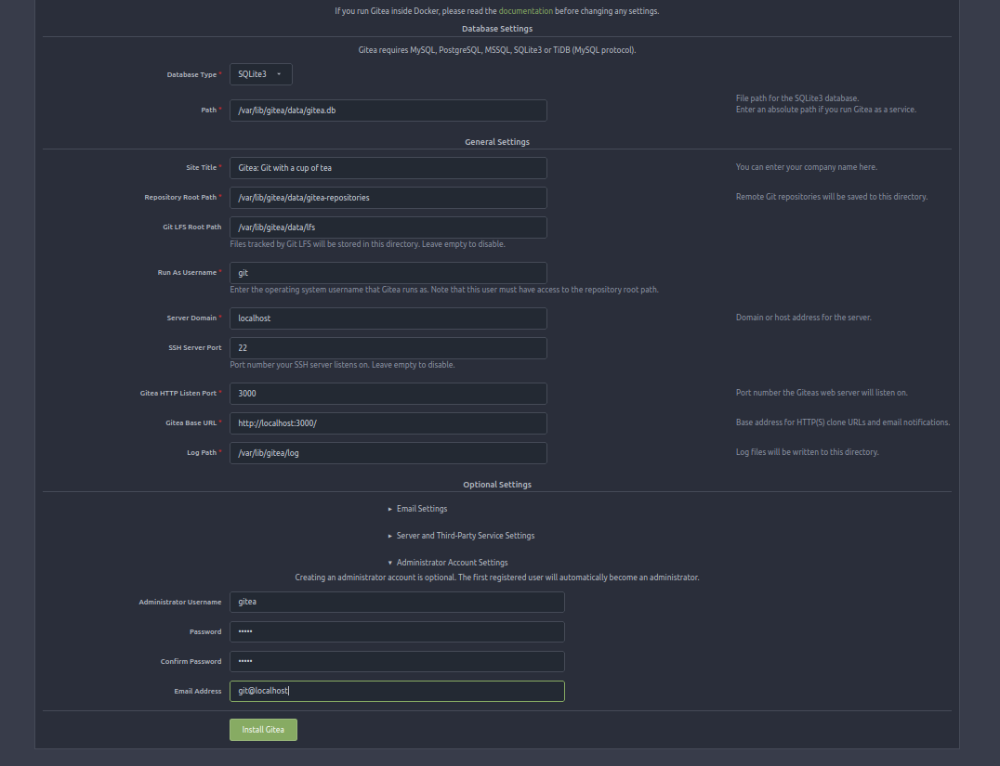

3-26-2023
Nous avons créé une machine virtuelle avec son système d’exploitation Debian 11 et l’environnement graphique MATE, et au moins 2 utilisateurs et quelques logiciels de départ.
| Nom de la machine | sae203 |
|---|---|
| Type | Linux |
| Version | Debian 11 64-bit |
| Mémoire vive (RAM) | 2048 Mo |
| Disque dur | 20 Go |
À l’aide de l’interface graphique de VirtualBox:
[ ] Nom de la machine : serveur
[ ] Domaine : -
[ ] Pays / Langue : France
[ ] Miroir : http://debian.polytech-lille.fr
[ ] Proxy : http://cache.univ-lille.fr:3128
rootrootUseruseruser[ ] 1 seule partition pour tout le disque
Warning: Redémarage du système sans le fichier iso d’installation.
sudo pour userPour simplifier la gestion du système, nous avons ajouter à user le groupe sudo
Passage en mode console : Ctrl+Alt+F1
Connexion en root: login = root et mot de passe = root
sudo adduser user sudo
Warning: Rechargement de la session pour appliquer les changements.
sudo mount /dev/cdrom/mntsudo /mnt/VBoxLinuxAdditions.runQ: Que signifie “64-bit” dans “Debian 64-bit” ?
R: Représente le traitement des données et instructions que peut faire le système, ici, cela serait par paquets de 64 bits.
Q: Quelle est la configuration réseau utilisée par défaut ?
R: La configuration réseau utilisée par défaut:

Q: Quel est le nom du fichier XML contenant la configuration de votre machine ?
R: Le nom du fichier est sae203.vbox.
Q: Sauriez-vous le modifier directement ce fichier pour mettre 2 processeurs à votre machine ?
R: Oui, il suffit de modifier la valeur de la variable “CPU count” qui est par défaut à 1 et la mettre à 2.

Q: Qu’est-ce qu’un fichier iso bootable ?
R: Un fichier image créé à partir d’un CD ou d’un DVD auquel on peut faire démarrer une machine dessus.
Source : Mozilla
Q: Comment peux-ton savoir à quels groupes appartient l’utilisateur user ?
R: Grâce à la commande :
groups
Q: Quel est la version du noyau Linux utilisé par votre VM ?
R: La version du noyau Linux utilisé est 11.6.0
Q: À quoi servent les suppléments invités ?
R: Ils contiennent des pilotes de périphériques et des applications système qui optimisent le système d’exploitation ou améliore l’interaction entre la machine hôte et invitée ; Par exemple la connexion automatisée ou l’intégration du pointeur de la souris.
Sources : Oracle
Q: À quoi sert la commande mount ?
R: Sert à monter un système de fichier sur un répertoire donné en paramètre ce qui rendra le système de fichier accessible.
Sources : IBM
Q: Qu’est-ce que le Projet Debian ? D’où vient le nom Debian ?
R: C’est l’association d’individus qui ont eu pour but de créer un système d’exploitation libre. Le nom Debian vient des noms du créateur de Debian, Ian Murdock, et de sa femme, Debra.
Source : Debian
Il existe 3 durées de prise en charge (support) de ces versions : la durée minimale, la durée en support long terme (LTS) et la durée en support long terme étendue (ELTS).
Q: Quelle sont les durées de ces prises en charge ?
R: La durée minimale est la date de publication de la prochaine version stable + 1 an La durée en support long terme (LTS) est d’au moins 5 ans et 5 ans de plus pour une ELTS.
Sources : Debian durée minimale LTS ELTS
Q: Pendant combien de temps les mises à jour de sécurité seront-elles fournies ?
R: Environ une année après que la version stable suivante a été publiée.
Source : Debian
Q: Combien de version au minimum sont activement maintenues par Debian ?
R: Au moins trois versions: stable, testing, unstable
Source : Debian
Q: D’où viennent les noms de code données aux distributions ?
R: Les noms de code proviennent des personnages des films “Toy Story”.
Source : Debian
Q: Combien et lesquelles sont prises en charge par la version Bullseye ?
Source : Debian
Q: Quelle a était le premier nom de code utilisé ?
R: Nom de code: Buzz
Q: Quand a-t-il été annoncé ?
R: Annoncé le 17 juin 1996.
Q: Quelle était le numéro de version de cette distribution ?
R: Sous le numéro de version Debian GNU/Linux 1.1.
Source : Debian
Q: Quel est le dernier nom de code annoncée à ce jour ?
R: Nom de code: Bullseye
Q: Quand a-t-il été annoncé ?
R: Annoncé le 14 août 2021.
Q: Quelle est la version de cette distribution ?
R: La première version de la distribution est la version 11.0 et sa dernière mise à jour est la version 11.6.
Source : Debian
Etant donné que l’image iso d’installation Debian 11.6 posséde une option avancée qui permet d’automatiser l’installation, rien n’est à faire. Après avoir récupéré l’archive autoinstall.zip;
Executé la commande suivante:
sed -i -E "s/(--iprt-iso-maker-file-marker-bourne-sh).*$/\1=$(cat
/proc/sys/kernel/random/uuid)/" S203-Debian11.visoEt inséré le fichier S203_Debian11.viso dans le lecteur optique de la machine virtuelle, Il ne restait plus qu’à démarrer la machine virtuelle et laisser l’installation se dérouler.
Pour modifier notre configuration dans le fichier preseed-fr.cfg:
Ajout droit sudo:
d-i passwd/user-default-groups string audio cdrom video sudoInstallation MATE ainsi que différénts paquets:
tasksel tasksel/first multiselect standard ssh-server mate-desktop
d-i pkgsel/include string git, sqlite3, curl, bash-completion, neofetchAprès avoir executé les commandes suivantes:
git config --global user.name "Kellian Mirey"
git config --global user.email "kellian.mirey.etu@univ-lille.fr"
git config --global init.defaultBranch "master"Q: Qu’est-ce que le logiciel git-gui ?
R: git-gui est l’interface graphique intégré à la commande git via la commande suivante: git gui [<command>] [<arguments>]
Source: https://git-scm.com/docs/git-gui
Q: Qu’est-ce que le logiciel gitk ?
R: gitk est une interface graphique de git permettant de visualiser l’historique des commits sous forme de graphe. gitk & dans le même répertoire que le projet.
Source: https://git-scm.com/docs/gitk
Q: Quelle sera la ligne de commande git pour utiliser par défaut le proxy de l’université sur tous vos projets git ?
R: git config --global http.proxy
Source: https://git-scm.com/docs/git-config#Documentation/git-config.txt-httpproxy
Redirection de port à faire sur l’interface graphique de VM.
Q: Qu’est-ce que Gitea ?
R: Gitea est un client git web avec la possibilité d’héberger sa propre instance de Gitea sur son propre serveur.
Source: https://docs.gitea.io/fr-fr/
Q: A quels logiciels bien connus dans ce domaine peut-on le comparer ?
R: Gitea est similaire à GitHub, GitLab
Source: https://docs.gitea.io/fr-fr/
git et configurations des droits de l’utilisateur et de l’accès à ces fichiers/usr/binLa commande sudo systemctl enable gitea fera en sorte que gitea soit lancé automatiquement à chaque démarrage de la machine.
On vérifie que le service est bien démarré:
systemctl status gitea.serviceEn ce rendant sur l’url http://localhost:3000, on obtient bien le résultat voulu.

Ne pas oublier de changer les permissions des chemins /etc/gitea et /etc/gitea/app.ini.
Q: Comment faire pour la mettre à jour sans devoir tout reconfigurer ?
R: Un fichier shell upgrade.sh nous est mis à disposition par gitea qui permet d’automatiser la mise à jour disponible sur le github: https://github.com/go-gitea/gitea/blob/main/contrib/upgrade.sh. Il suffit d’entrer la commande correspondante comme ci-dessous:
Source: Gitea
sudo ./upgrade.sh -v 1.19Clone du projet dev-oo d’un membre de l’équipe:
git clone https://gitlab.univ-lille.fr/atilla.tas.etu/dev-oo && cd dev-oo
git remote remove origin
git remote add origin http://localhost:3000/gitea/dev-oo
git branch -m main master
git push origin masterCréation d’un projet pour les rapports de la SAE:
git init
git remote add origin http://localhost:3000/gitea/sae2.03
git add .
git commit -m "Initial commit"
git push origin master